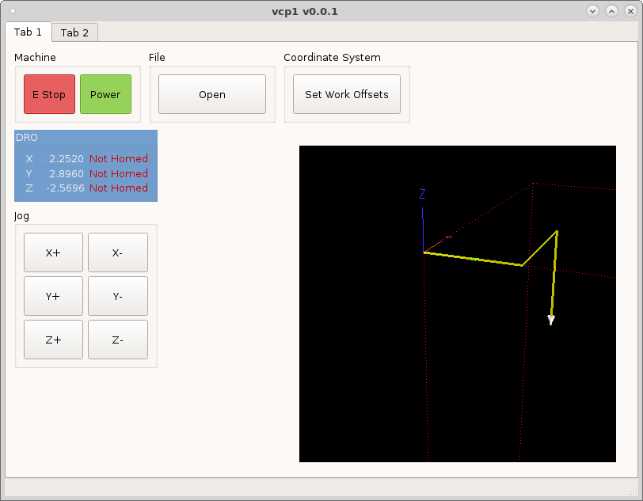
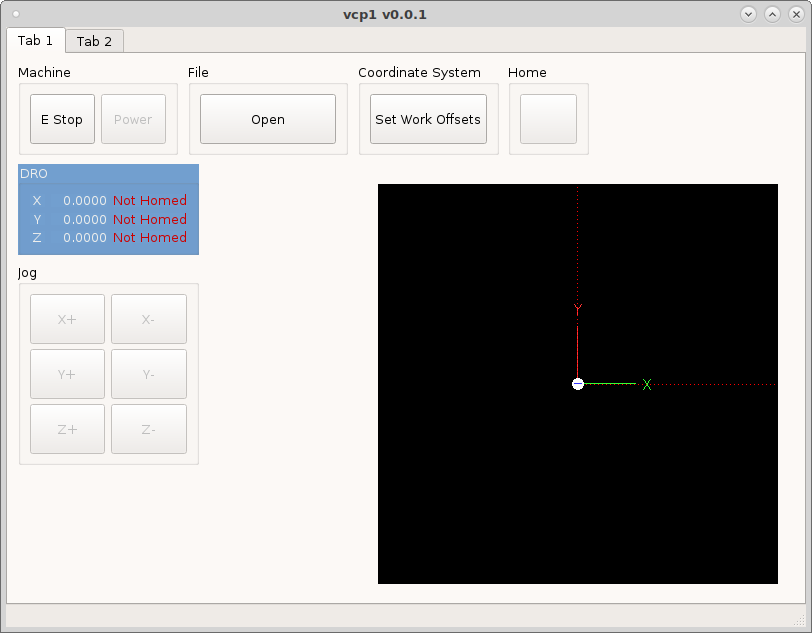
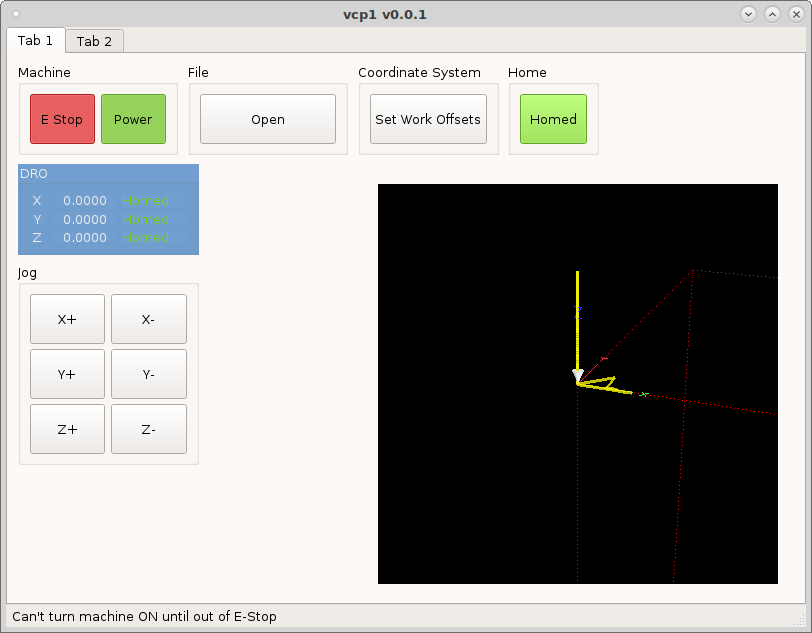

Machine Buttons
Lets create some jog buttons by adding some ActionButtons to a group box. Set the minimum height to 50 and put the following into the actionName.
machine.jog.axis:x,pos
machine.jog.axis:x,neg
machine.jog.axis:y,pos
machine.jog.axis:y,neg
machine.jog.axis:z,pos
machine.jog.axis:z,neg
Now when we run the configuration we can jog and set work offsets.
{kind=link}
Lets add a Home All ActionButton with the actionName machine.home.all.
{kind=link}
Lets create a Rule for the Home button to change the text based on if all the axes are homed or not. Double click on the Home button to open the Rules Editor. Select the Text property and give the rule a name. Add three channels, one for each axis and check trigger.
status:joint[0].homed
status:joint[1].homed
status:joint[2].homed
The Channel Type is the output type of that channel, in this case it is a
bool which is a true or false output. So now we need a valid Expression. The
expression syntax is Do This If This is True Else Do That. So we want to
change the text of the button if the machine is homed so the expression is:
'Homed' if ch[0] and ch[1] and ch[2] else 'Home'
'Homed' if ch[0] and ch[1] and ch[2] else 'Home All'
{kind=link}
Notice that the button now has some text in it and it came from the rule.
Now we want to add another rule to change the color of the button when all the
axes are homed so we have a quick visual that the machine is homed. But first we
need to use a quick shortcut to get a valid markup string. So drag a text label
(it can be a regular text label) into the main window and open the Style Sheet
editor and add background-color: then click on the Add Color and pick a
color. Now make sure the validator in the lower left corner is green and says
Valid Style Sheet, now you know your markup is valid. Copy that string to the
clipboard.
{kind=link}
Now open back up the Home button Rules Editor and add a new rule with the same three channels. Pick Style Sheet as the property to change.
The expression is:
"background-color:rgb(138, 226, 52)" if ch[0] and ch[1] and ch[2] else ''.
This reads change the background color if all axes are homed else do nothing.
{kind=link}
Now open back up the Home button Rules Editor and add a new rule with the same three channels. Pick Style Sheet as the property to change.
The expression is:
"background-color:rgb(138, 226, 52)" if ch[0] and ch[1] and ch[2] else ''.
This reads change the background color if all axes are homed else do nothing.
Run the VCP and see the effects of the rules on the Home All button and the DRO status labels.
{kind=link}
Now we need to be able to start and stop the program so add some ActionButtons to a group box with the following actionNames
program.run
program.pause
program.resume
program.abort
{kind=link}
At this point you have a minimal functioning VCP, next we’ll add the MDI Entry.